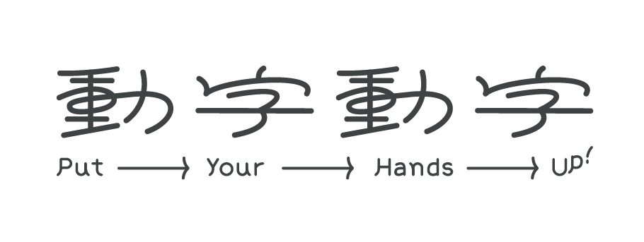
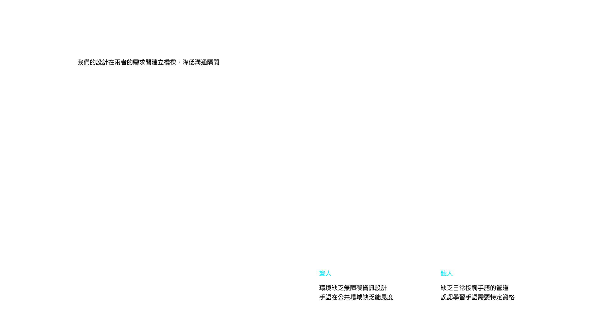
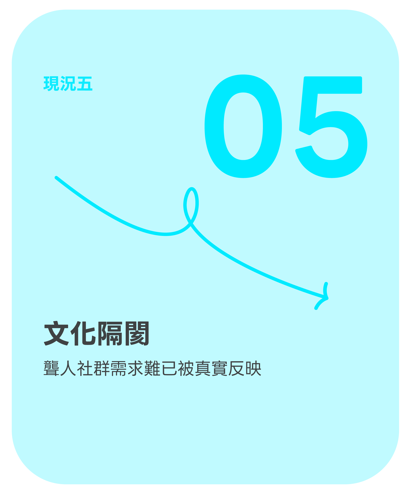
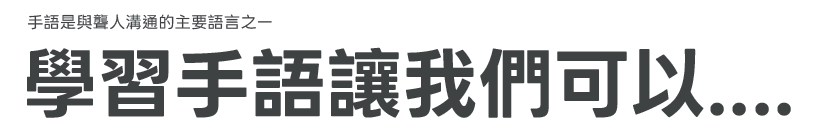
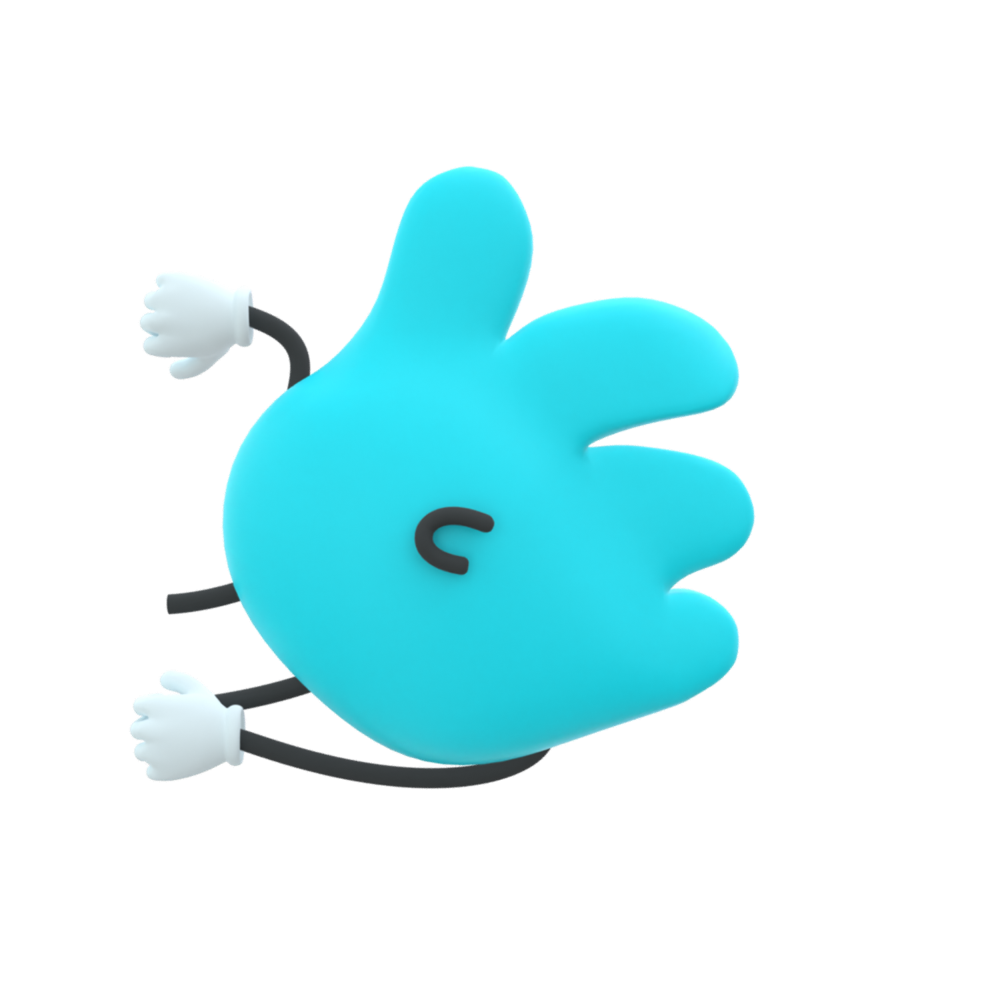
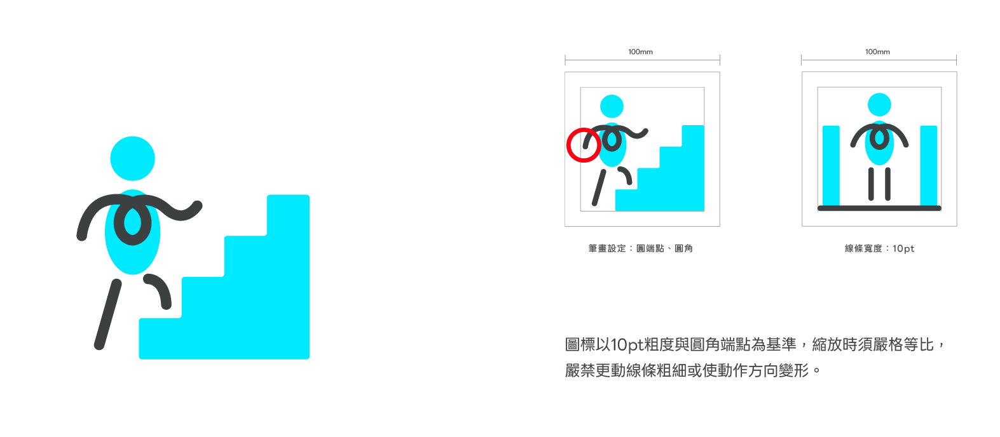

- 用行動落實資訊平權
- 溝通多一種可能
- 促進聾人參與社會公共事務
- 文化傳承








手語不是全世界通用的！不同國家都有自己的手語系統，就像不同的語言一樣
雖然有一種為了國際交流而產生的「國際手語（IS）」，但因不具備固定的語法和詞彙，並不是一個真正的語言
台灣手語已於2018年通過《國家語言發展法》，正式列為國家語言
2021年教育部也將台灣手語納入十二年國教課綱，成為國中小及高中的語言課程之一
台灣手語在發展過程中，日治時期受到日本手語的影響，因此台灣手語也出現南北差異
就像不同地區有不同腔調一樣，雖然手勢或詞彙有些差異，但通常不會影響溝通
手語分為「自然手語」和「文法手語」
自然手語是聾人社群在日常生活中自然發展出來的語言
許多動作來自生活事物的模仿，特色是表意不表字
文法手語主要出現在教育體制中，由特殊教育者所設計
句型結構仿照中文語法，語氣較自然手語不足
在聾人社群的日常溝通中，多半仍使用自然手語
因為它更符合手語本身的語言邏輯，也更自然流暢
手語是一種視覺語言，由手勢、位置、方向與表情組成
其中表情代表著語氣，用來表示疑問、否定、肯定或強調等意思
手語並不是由某個人或機構統一制定的語言，而是透過社群長期的使用，逐漸形成的共識
詞彙也會隨著時代與社會發展不斷更新，例如疫情期間就出現了「新冠病毒」、「確診」或「快篩」等新的手語詞彙



乳室.png)


